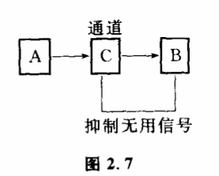
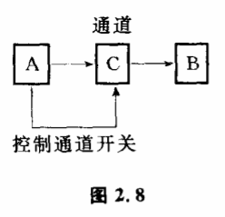

2.5 滤波:去伪存真的研究
千百年来,人们积累了许多对付干扰的方法,其中许多已被科学家和工程师采纳,在通讯技术中形成了一整套滤波理论,有的被人们广泛地应用于实践,成为科学方法论的一个部分。下面我们来研究几种与滤波有关的方法问题。
最直观的滤波方法是让信息沿着同一通道重复传递。打电话的时候,如果没听清,我们总是要求对方把话再重讲一遍。小学生掰着手指头算一道算术题,如果算错了,老师请他再掰手指头算一算,一个信息用同一通道重复传递,把得到结果互相核对,就可能发现错误的所在。这种方法对于排除那些随机发生的、偶然的干扰比较有效,因为偶然发生的干扰使最后结果相同的概率很小。现代一些大型电子计算机也常常使用这个方法来进行验算。但是这个方法有一个很大的缺点,它不能排除同一通道中那些系统地、有规则地发生的干扰。
另一个更好的滤波方法是,用完全不同的通道来传递同一个信息,再把各种结果拿来对比、分析。为什么这一方法比重复同一通道传递信息好呢?因为即使是系统地、有规则地发生的干扰,同时影响几条完全不同通道的可能性也是很小的,我们举几个例子。
魏格纳从非洲大陆和美洲大陆可以拼在一起得到一个结论:古代世界的大陆是合并在一起的,由于地壳的水平运动造成大陆漂移,才形成今天全世界陆地的分布。非洲大陆和美洲大陆可以拼在一起,这只是一个信号。这个信号是否携带着古代大陆是一块整体的信息呢?可能古代大陆是合并在一起的,但这也可能只是一个巧合。巧合在这里就可能是干扰。这个干扰如何排除呢?那就需要看其他一些通道是否带来同样的信息。科学工作者们分析了残留在岩石里的古代地磁场,发现从古地磁的角度也能证明这一点。要肯定这样一个重要的假设,光有两条通道还是不够的。科学工作者又从古生物学、海底年龄和沉积物等等许多完全不同的途径得到同一个信息“大陆发生过漂移“。于是,虽然大陆漂移的机制尚不明了,但漂移的假设基本上被肯定下来了。
二次大战期间,盟军得到一个信息:“德国人还不能制造原子武器。“这个信息可靠吗?会不会是敌方故意制造的昵?这时,盟军从另一条和军事方面完全没有关系的通道获知:“德国人正在用钍做牙膏。“钍是当时制造原子武器需要的化学元素。从这两条完全不相干的通道就证实了德国人还不能制造原子弹的结论,排除了可能发生的干扰。
对于那些有重大意义的事件,不可让一条脆弱单一的信息通道来传递。据说,在美军启动核导弹的中心控制室里,规定了一整套严密的措施来控制核导弹的发射。为防止在核战争恐怖气氛下控制人员可能神经错乱而随意启动按钮,除了定期对控制人员进行精神病检查外,操作系统还必须由两个人同时操作,他们在接到命令后分别按程序启动各种按钮,这样控制才会生效。两个控制人员同时神经错乱的可能性毕竟太小了。从军事的角度来说,这样做是完全必要的。为什么一旦有实验证据发现一个新的基本粒子时,科学家要反复地检验,为什么迄今出现了那么多关于外星人的考古学证明和飞碟的报道,而科学家还不敢肯定地球之外文明的存在。因为这些信息携带的事件太重大了,人类在接受它们之前,必须再三判断它的可靠性。
有趣的是,早在人类认识到使用不同通道传递信息的重要性之前,生物体已经在不断的进化过程中采用这种方法了。对于一个物种,最重要莫过于种的延续问题了。我们知道,物种的遗传信息是通过染色体中的DNA来携带的。人们发现,比较高等的生物,体细胞内的染色体都是成对出现的,它们通过“减数分裂“进行繁殖。子代从母本的卵细胞得到半套染色体,又从父本的精子细胞中得到半套染色体,卵细胞和精子细胞结合后,两个半套染色体就结合成一套成对的染色体。在一些低等的生物中,事情要简单得多,例如红色面包霉的染色体不成对,都是单个的,它们在繁殖的时候不通过父本和母本的减数分裂,细胞直接经过有丝分裂产生后代。为什么生物在进化过程中要否定这种比较简单的繁殖方法,而逐步采用前面那种比较麻烦的方法呢?原来,携带着遗传信息的染色体,也像其他一切信息通道一样,经常受到各种因素的扰。这些干扰可能是物理的、化学的、生物的作用,一旦它们影响了染色体的组成,就会导致突变。绝大多数的突变（99%以上）是有害的,有些甚至是致命的。不实行减数分裂的低等生物,实际上把遗传信息交给了单个染色体去传递,相当于只设立一条信息通道来传递如此重要的遗传信息。这样如果上代个体的任何一条染色体产生了缺陷,都会直接地传递给下一代。为了保持物种的稳定性,高等生物用减数分裂的方式来繁殖,这相当于设立了两条信息通道,让父本和母本分别来携带遗传信息,子代从父本的精子细胞里得到一套信息,又从母本的卵细胞里得到另一套信息,把两套信息拿来相互核对。这种传递遗传信息的方法使生物避开了许多可怕的遗传性疾病。例如人类的镰状细胞贫血。如果父母亲的染色体都带有镰状贫血基因,后代就会得这种病而在儿童时期死去,但如果父母亲中只有一个携带这种基因,缺陷就会被遮盖掉,显不出病来,看来生物体不仅设立了不同的通道来传递信息,而且建立了一种专门核对不同信息的机制。
必须指出,所谓不同的通道应当使通道组成的各个环节尽量地不同,否则在那些相同的环节中仍有可能受到特定干扰的经常影响。《战国策》里有一个曾参杀人的故事。有人听说曾参在费国杀了人,就去告诉曾参的母亲。曾参的母亲正在织布,听了这消息,头也不抬地回答说:“我的儿子,决不会杀人的！“过了一会儿,又有人来报告说曾参杀了人了！“曾参的母亲还是不相信。过了不久,第三个人又来报告“曾参杀人了！“曾参的母亲听了那么多人来报告,害怕了,立刻扔下手中的梭子,急急忙忙地离开织布机,跳墙逃跑了。其实在费国杀人的是与曾参同名的一个人。曾母在这里犯了一个错误,她所得到的信息虽然是由三个不同的人向她传递的,但这三个人都把姓名与人的对应关系弄错了,三条通道的第一个环节——可辨状态是相同的,而干扰也正好出在这个环节上,曾母没有从一条各个环节都不同的通道来获得信息。生物的远缘繁殖比近缘繁殖所产生的子代更有生命力,因为近缘意味着父本和母本的信息来自一些共同的通道,一旦这些环节受到干扰,它们的后代会接受到错误相同的信息,无法通过相互核对来弥补不足。
我们知道,质量、能量、动量、动量矩、电荷等物理量在体系的变化过程中都遵守相应的守恒定律,那么信息量是不是也遵守某种守恒定律呢?人们发现,在信息传输的过程中,信息量服从的一条相规律是:它只会在传输过程中不断减少,不会增加。换句话说,信息在传输过程中的不确定性只会增大,不会减少。为什么呢?就是因为有干扰存在。由信息源发出的一个消息在传递过程中只会越来越不确切,不会越来越清晰。一般说来,信息传递通过的通道越长,环节越多,可能受到的干扰就越多。只要在信息传递过程中任何一环控制能力被减弱,整个信息传递过程就会受到影响。因此,当有许多通道可以传递信息时,我们总要尽量选取那些比较短的,离信息源比较近的通道。历史学家在考证一个历史事实时,总比较尊重与之同时代或与之事隔不久的记载证据。《韩非子》里有个愚人买鞋的故事。有个愚人想买双新鞋子穿,先在家里用尺把脚量了量,摘了根稻草,记下了尺码。巧是因为走得急,把稻草忘在家里了。他到了鞋店,摸了摸口袋,发现忘了带稻草,就急忙回去拿。等他赶回来,鞋店已经关门了。这位先生只相信那根稻草,而不相信自己的脚。他不知道脚大小的信息由脚传到尺,又由尺传到稻草,中间受到了许多干扰,哪里有自己的脚可靠呢?信息量在传递过程中只会减小不会增大的规律,有很大的认识论意义。唯物论的认识论强调直接实践,强调第一手资料的重要性,或许可以通过这个规律从科学上得到说明。当然,强调直接实践的重要性并不意味着它是获得信息的惟一通道,在许多情况下,人们还是不得不依靠一些较多的环节,较长的信息通道来感知世界。
排除干扰还经常采用“阻抗滤波法“。
无线电中电容器通不过低频信号但能通过高频信号,电感则相反。这就是阻抗滤波的最简单的例子。广义一点讲,所谓阻抗滤波,就是找到干扰和携带信息信号的本质差别,用一种装置或手段让干扰信号通不过去,而携带信息的信号能顺利通过。不同的无线电台利用不同频率的无线电波把信号发送出来,我们的收音机天线实际上把所有不同电台的无线电节目都接收下来了。如果所有这些节目都同时在喇叭里放出来,就是一件很糟糕的事情。收音机中的滤波器和相应装置利用不同节目的无线电波频率不同,选出某一个节目相应的无线电频率通过,而拒绝其他频率节目通过。
在分析化学中,为了在组成复杂的混合物中鉴定出某种物质,必须使用特征性的指示剂。例如碘就是淀粉的特征指示剂。在有微量淀粉存在的情况下,碘迅速由紫色变蓝,对其他物质就没有这种变化。碘的这种既灵敏乂有极强针对性的指示作用,可以准确地传递淀粉存在的信息,排除其他物质的干扰。
地震预报中,有人采用地下水中放射性元素氡的含量异常来传递是否有地震的信息。为什么放射性氡的异常能携带地震的信息呢?地震前,由于地壳应力的高度集中,地下异常现象是十分多的,不仅是氡,其他很多元素和化合物含量都可能有异常出现,但常常只有氡准确地携带着地下应力异常的信息传到地表上来,而别种物质却不行。因为氡是一种情性气体,它的化学性质很稳定,当地下异常发生时,它不易受地壳其他种种因素的干扰。别的元素就不行,它们在通过十几公里的地壳过程中,所携带的异常信息早被地表种种化学物理作用淹没了。选择氡作为传递地下异常状态的信息通道,就是一种阻抗滤波法,因为干扰信号不能通过这条通道传上来。
生物的感受器都有它特定的工作范围,生理学上称为适宜刺激。也就是每一种感官只对某一种刺激最敏感,而对其他刺激则很不敏感。例如眼只能感受波长从7700埃到3900埃的可见光,耳朵只能感受20赫到2万赫之间的声波。感官在感受环境的刺激方面表现出这种专门化和对相应刺激的高度敏感性,是生物长期进化的结果,它有利于机体对环境中影响生存最重要的变化作出精确的反应。可以想像,如果我们的感官不受限制地把外界的一切信息都输入神经中枢,那么大脑就会因为处理不了那么多信息而陷入混乱之中。
当信息传递中遇到的干扰主要是主观干扰时,通常采用的滤波法是:让信息和它的重要性放在一起传递出去,用控制论的术语说就是让信息带上“情调“。非洲原始部落所用的鼓语中,如果听到单调的“勃拉克·阿登“声音时,人们都有忧郁恐惧之感。这是成年人死亡的丧音。这时,人们不仅凭信号,而且凭信号的节奏就可感觉到发生什么事情了。说话时的语调是最常见的例子。一个人向你焦急地大声叫喊,虽然你听不清声音,但你知道一定有什么急事,你就会全神贯注,竖起耳朵听,以排除其他声音的干扰。信号灯的颜色,剧毒品包装纸上画上黑色的骷髅等等,都是传递信息时同时传递情调的例子。

反馈的方法也经常用于滤波,被称为反馈滤波法,利用收到的有用信号和通道互相作用,以便抑制无用信号通过。图2.7中A通过C将信息传给B。B在A第一次传来的各种信号中进行选择,将有用的信号再输回到C,与通道相互作用以抑制无用的信号,保证有用的信号顺利通过。人每时每刻都在利用这种办法进行滤波。人的感官所接收的信息不一定都是人所需要的,即使在适宜刺激的范围内,仍有许多无用的信息。这些信息全部被送进大脑后,大脑能够迅速地作出鉴别,把注意力集中于有用的信息,使通道主要传递那些大脑感兴趣的部分,并用那些有用的信息来抑制那些无用的信息,对它们采取“视而不见“、“听而不闻“的办法。
还有一种和反馈滤波类同的滤波法——同步滤波。它利用信号与通道开关的同步来滤波,其作用过程可表示为图2.8。A通过通道C将信息传给B,如果C老是开着,那么干扰也可以随时进入通道。在信息源发出的信号不是连续而是断断续续的情况下,这种通道的利用效率就很低。信息源A发出的信号停顿的那段时间里,通道不但不传递有用的信息,而目.为干扰提供了方便。这种情况可以采取控制通道C开关的办法,让C在有信息通过时才打开,没有信息通过时就关上,以减少干扰的进入。但这里必须再加一个条件,那就是C的开启跟A信号的发生与否要同步。如果不同步,那A的信号也传不过来了。我们举一个例子,用气泡室观察基本粒子相互作用时,由于气泡产生和消失得很快,眼睛根本不能看见。因此,需要用照相机将其拍下来。这里,A代表气泡室,C代表照相机快门,B表示底片。显然,C不能老是开着开的时间越长,液体中出现的干扰（气泡偶然发生,灰尘等）也会被拍到照片中去。因此、C只有在气泡产生的一瞬间才可以开,这就需要A与C的同步。格莱塞是通过一个留声机头来控制照相机快门的,一旦A有大量气泡发生,马上在溶液中发出一种很短的声波。声波使容器壁发生振动,振动通过留声机头控制着照相机快门。同步过程越好,干扰也就越少。其他滤波的方法还很多,我们在这里只讨论了一些一般的原则,这些讨论也许还远远不足以反映整个问题的复杂性,因为排除干扰的课题涉及认识论的某些根本原则。人们在实践中经常体会到“去伪存真“是一件多么不容易的事情。当然,我们也必须看到,正确的认识和判断不能完全归结于找到排除干扰的方法,认识过程的复杂性还包括一些更高级的思维规律。例如,在军事上,一些重要情报常常来之不易,它们往往只能通过某几条干扰很大的通道获得。这时怎么办呢?一些著名的军事理论家指出,军事上的重大行动不能完全取决于情报。克劳塞维茨讲过:“对于没有经验的指挥官来说,更糟的是……一个情报得到支持,证实、补充另一个情报,图画上在不断增加新的色彩,最后,他不得不匆忙作出决定,但是不久又发现这个决定是愚蠢的,所有这些情报都是虚假的……通常,人们容易相信坏的……而且容易把坏的作某些夸大……以这种方式传来危险消息尽管像海浪一样会消失下去,但也会像海浪一样没有任何明显原因就常常出现。指挥官必须坚持自己的信念,像屹立在海中的岩石一样,经得住海浪的冲击。”